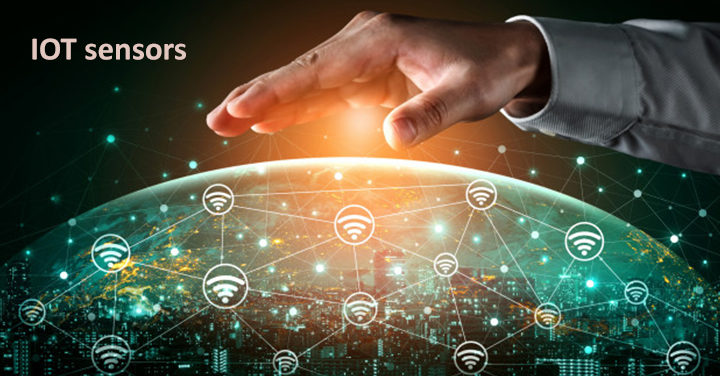
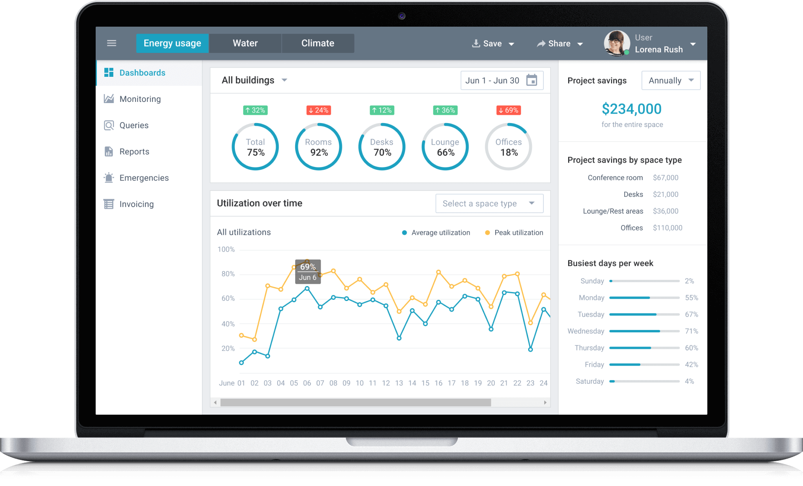

Nuestro objetivo es ser su mejor aliado, en la implementación de cualquier proyecto IoT, proporcionando el apoyo en cada fase de la adopción de estas tecnologías. El soporte de nuestra empresa incluye soluciones para muchos tipos de industrias. Las diferentes opciones que proveemos abarcan todas líneas de productos IoT.
Componentes IoT
Una solución IoT esta conformado por una seríe de elementos, que permite aprovechar todos los beneficios que este tipo de despliegue proporciona.
En el extremo final, se encuentran los elementos que interactuan con las cosas que se desean controlar o monitorear, siendo estas cosas de amplia diversidad, como eletrodomesticos, maquinaria, elementos de transporte, dispositivos de posicionamiento, puertas, aire acondicionado, entre muchos otros. Para el control y monitoreo de cada elemento conectado se utilizan los sensores y actuadores. En este campo existe una diversidad de opciones y aplicaciones, pero en resumen estos elementos son los que recolectan la información de cada variable a monitorear y/o toman acciones sobre los elementos bajo control.
En el siguiente nivel estan las contrapuertas y el procesamiento en el acceso, estos dispositivos son los encargados de coordinar un grupo de terminales (sensores, actuadores) y reaizar un anáisis preliminar de la información recolectada y tomar acciones en el área bajo su jurisdicción.
En la parte central del sistema, se encuentra el procesamiento de los datos, para obtener información utíl para el contro y toma de decisiones de la empresa. Estas soluciones de software pueden ser alojados en un data center privado o ser parte de un servicio en la nube.
Contamos soluciones para cada componente de los sistemas IoT, apoyamos a nuestros clientes para el desarrollo de la solución que mas se ajuste a sus necesidades
Aplicaciones IoT
Casos de uso para IoT
Prácticamente todas las industrias pueden beneficiarse con el uso de soluciones IoT, pero cada caso necesita una análisis especial, para su correcta implementación y para lograr el máximo beneficio
Algunos casos de uso de sistemas IoT
Estos son solo algunos ejemplos de las diferentes aplicaciones que se pueden desarrollar con las tecnologías IoT
Industria de la agricultura
En el área de agrícultura hay una gran variedad de aplicaciones muy interesantes y de amplio beneficio. Al tener sensores recolectando información constantemente en las áreas de producción y con el uso de herramientas de procesamiento y correlación de los datos obtenidos, es factible tener aplicaciones como: irrigación inteligente, predicción de cultivos, invernaderos inteligentes, monitoreo del estado ambiental de las bodegas, entre muchas mas aplicaciones.
Edificios y ciudades inteligentes
La incorporación de elemenos de monitoreo y control, en las diferentes partes de una ciudad o dentro de la infraestructura de edificios, permite realizar una gran cantidad de mejoras y adiciones a la operación y control. Es factible llevar a cabo funciones como gestión del tráfico con mayor certeza, control de recursos como el gasto de agua potable, manejo de desechos, manejo de la iluminación, soluciones para el parqueo, implementar herramientas para el manejo de desastres. Todos estos son solo unos pocos ejemplos de las tantas aplicaciones que se tienen en este sector
Redes eléctricas inteligentes
Con la inclusión de diferentes componentes inteligentes en toda la infraestructura del servicio eléctrico, las compañias de este sector pueden tener un control preciso de su sistema. Es factible llevar un control detallado por ejemplo del consumo por cliente con información totalmente en línea. Realiza
r correlación de información del consumo por sectores, tipo de consumidor, etc. teniendo los datos actualizados al instante, para el apoyo a la toma de decisiones en actividades como mantenimientos, modificaciones, manejo de fallas.

Los sensores y actuadores son los ojos y manos del sistema, a través de estos componentes es posible monitorear y controlar los diferentes elementos de interés
Opciones disponibles
Para cada tipo de aplicación existen distintos tipos de sensores y actuadores, se tienen variantes dependiendo el nivel de precisión requerida, las condiciones ambientales donde será instalado el componente y tipo de interfaz de comunicación (WiFi, cellular, fibra óptica). Por lo tanto para cada caso es necesario realizar el analisis adecuado para que estos componentes cumplan con su cometido
Nuestro valor está en el apoyo con la selección de los componentes adecuados de acuerdo a cada aplicación, en base al diseño establecido, presupuesto y objetivo determinado. Le podemos asesorar con la seleción y con la provisión de los sensores y actuadores que se necesiten.

El sentido de este tipo de sistemas es tener la información a la mano y con una visualización que facilite la interpretación en el momento preciso.
Componentes para el manejo de a información
Toda la información recolectada por los sensores del sistema, deben ser procesados y correlacionados, para proveer información en línea y para fuera de línea, de forma que se puedan tener aplicaciones como el monitoreo activo, análisis de tendencias, analis forense, soporte a la toma de desiciones, etc.
Proporcionamos el servicio y el software necesario para cada tipo de aplicaciones, podemos desarrollar aplicaciones que se ajusten a la implementación particular de cada industria y cada empresa. Apoyamos en el desarrollo de procesos y procedimeintos para el manejo del sistema y de toda la información relacionada, de manera que tanto las aplicaciones como sus datos sean resguardados correctamente.